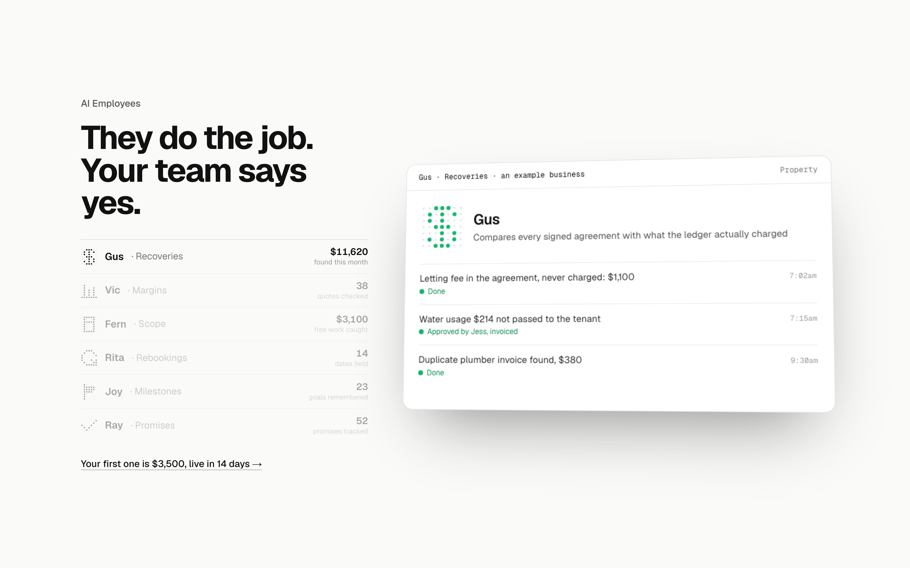
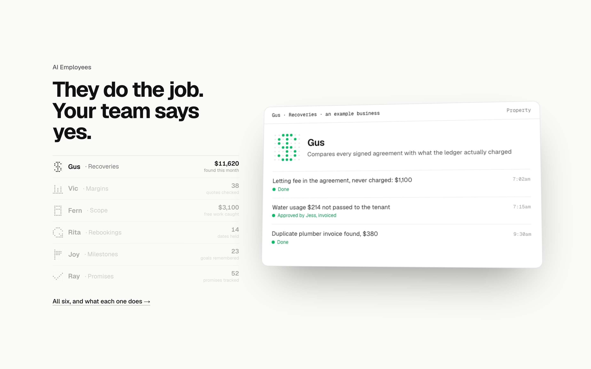
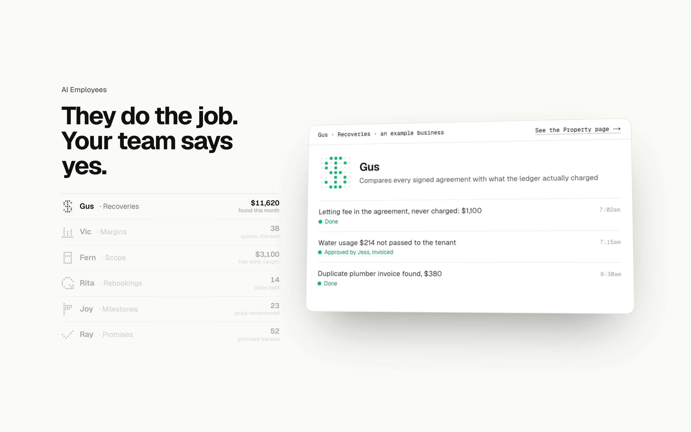

AI Employees: the close three ways
Detail 4 of 5. The scene with the heading, the scoreboard list and the timestamped card in place, Gus’s day finished. Every other section closes on a link; this one ends on the card today. Where the link goes and what it says.
TodayNo closeThe section ends on the card; nothing says where to go next.

1. The rungA line under the list: your first one is $3,500, live in 14 daysCloses on the ladder’s second rung, the thing this section sells, linking to the pilot page where the audit is booked. Recommended.

2. The rosterA line under the list: all six, and what each one doesCloses on the roster itself, linking to the AI Employees page (the one that replaces What gets built in the nav; /services stands in until it exists).

3. On the cardThe card’s bar carries the link to that employee’s industry pageEach employee’s card links to its industry page, so the close moves with the scroll; the list carries no link.
